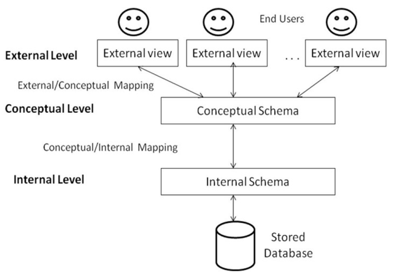

3 level Abstraction of Database
Its goal is to seperate the user applications and the physical database. It deals with the data, the relationship between them and the different access methods implemented.

- External/View Level: It includes a number of external shemas or users per views. It describes the part of the database that a particular user group is interested in and hides the details of database from the user group.
- Conceptual Level: It describes the structure of the whole database for the community of users. It hides the detail of physical storage structure and concentrates on describing datatypes,relationships and entities.It represents the global view of database.
- Internal Level: It has an interna schema which describes the physical storage structure of the database system.It defines various stored record types and specifies what indices exist and how stored fields are represented.
Mapping and Data Independence
The process of transforming requests and results between different level are calledmapping
- Conceptual/Internal Mapping: It defines the correspondence between the conceptual view and the stored database.
- physical data independenceindicates that the internal schema can be changed without any change to the conceptual schema
- External/Conceptual Mapping: It defines the correspondence between a particular external view and the conceptual view.
- logical data independenceindicates that the conceptual schema can be changed without any change to the external schema
Database Users